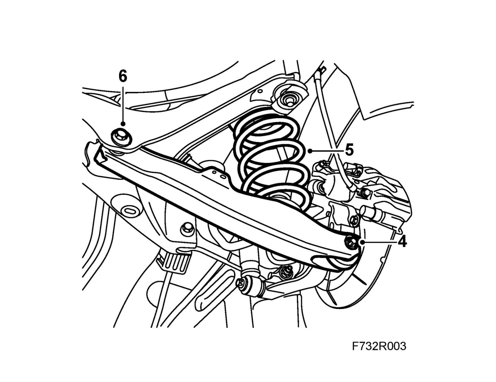

Lower Suspension Arm
Lower suspension armTo remove
1. Raise the car.
2. Remove the wheel.
3. Left-hand suspension arm and cars with xenon lights:Remove the level sensor.
4. Relieve the weight on the lower suspension arm with a jack and remove the bolt.
Important
The bolt must be screwed out and in respectively or there is risk that the hole will be "reamed" by the threads.

5. Pull the suspension arm down and remove the spring and the spring support.
6. Mark the position of the adjustment bolt. Remove the adjustment bolt and nut. Lift the link arm away.
To fit
1. Fit the link arm with the adjustment bolt and fit a new nut.
2. Fit the spring and spring support.
3. Lift up the lower suspension arm with a jack and fit the bolt. Lift the steering swivel member to normal position, 374 mm, 9-3X 390 mm (A) between the center of the drive shaft and the edge of the wing.
Important
The bolt must be screwed out and in respectively or there is risk that the hole will be "reamed" by the threads.

4. Remove the anti-roll bar from the steering swivel member on each side.
5. Lift the lower suspension arm to normal position with a jack and fit the nut.
Tightening torque 75 Nm +90° (55 lbf ft +90°)

6. Tighten the nut on the lower suspension arm adjustment bolt.
Tightening torque 75 Nm +60° (55 lbf ft +60°)
7. Remove the jack.
8. Fit the anti-roll bar to the steering swivel member.
Tightening torque 53 Nm (39 lbf ft)
9. Left-hand suspension arm and cars with xenon lights: Fit the level sensor.
10. Fit the wheel.
11. Lower the car to the floor.
12. Carry out four wheel checking and alignment, see Four wheel alignment.
13. Cars with xenon lights: Carry out light alignment/calibration.